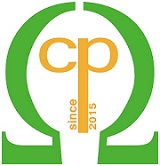

ACM Cyber-Physical System Security Workshop (CPSS)
Cyber-Physical Systems (CPS) consist of large-scale interconnected systems of heterogeneous components interacting with their physical environments. There exist a multitude of CPS devices and applications deployed to serve critical functions in our lives thus making security an important non-functional attribute of such systems. This workshop will provide a platform for professionals from academia, government, and industry to discuss novel ways to address the ever-present security challenges in CPS. ACM CPSS is held in conjunction with ACM AsiaCCS.
Steering Committee
· Dieter Gollmann (Hamburg University of Technology, Germany)
· Ravishankar Iyer (UIUC, USA)
· Douglas Jones (UIUC, USA)
· Javier Lopez (University of Malaga, Spain)
· Jianying Zhou (SUTD, Singapore) Chair
Workshop Series
· CPSS15 Singapore, April 14, 2015 [proceedings] AR = 35%
Program Chairs: Jianying Zhou, Douglas Jones
· CPSS16 Xian, China, May 30, 2016 [proceedings] AR = 30%
Program Chairs: Jianying Zhou, Javier Lopez
· CPSS'17 Abu Dhabi, UAE, April 2, 2017 [proceedings] AR = 29%
Program Chairs: Jianying Zhou, Ernesto Damiani
· CPSS18 Incheon, Korea, June 4, 2018 [proceedings] AR = 25%
Program Chairs: Dieter Gollmann, Jianying Zhou
· CPSS19 Auckland, New Zealand, July 8, 2019 [proceedings] AR = 36%
Program Chairs: Aditya Mathur, Jianying Zhou
· CPSS20 Taipei, Taiwan, October 6, 2020 [proceedings] AR = 35% (virtual)
Program Chairs: Sokratis Katsikas, Cristina Alcaraz
· CPSS21 Hong Kong, China, June 7, 2021 [proceedings] AR = 37.5% (virtual)
Program Chairs: Mauro Conti, Nils Ole Tippenhauer
· CPSS22 Nagasaki, Japan, May 30, 2022 [proceedings] AR = 42% (hybrid)
Program Chairs: Alvaro Cardenas, Daisuke Mashima
· CPSS23 Melbourne, Australia, July 10, 2023 [proceedings] AR = 37.5% (hybrid)
Program Chairs: Rodrigo Roman, Mujeeb Ahmed
· CPSS24 Singapore, July 2, 2024 [proceedings] AR = 45%
Program Chairs: Jianying Zhou, Sudipta Chattopadhyay
· CPSS25 Hanoi, Vietnam, 26 August 2025 [proceedings] AR = 40%
Program Chairs: Awais Yousaf, Eyasu Getahun Chekole
Keynote Speeches
|
2015 |
Cyber-Physical Systems Security Experimental Analysis of a Vinyl Acetate Monomer Plant |
Dieter Gollmann (Hamburg University of Technology, Germany) |
|
Resilience of Medical Devices and Systems |
Ravishankar Iyer (UIUC, USA) |
|
|
Cyber Security in SCADA Networks |
Ganesh Narayanan (Thales, Singapore) |
|
|
2016 |
Risk Assessment of Cyber Access to Physical Infrastructure in Cyber-Physical Systems |
David M. Nicol (UIUC, USA) |
|
N-Version Obfuscation |
Michael R. Lyu (Chinese University of Hong Kong, China) |
|
|
2017 |
On the Disappearing Boundary between Digital, Physical, and Social Spaces Who, what, where and when? |
Bashar Nuseibeh (The Open University, UK & Lero, Ireland) |
|
Cyber Security of the Autonomous Ship |
Sokratis Katsikas (NTNU, Norway) |
|
|
2018 |
On the Limits of Detecting Process Anomaly in Critical Infrastructure |
Aditya Mathur (SUTD, Singapore & Purdue University, USA) |
|
Leaky CPS: Inferring Cyber Information from Physical Properties (and the other way around) |
Mauro Conti (University of Padua, Italy) |
|
|
Control Theory for Practical Cyber-Physical Security |
Henrik Sandberg (KTH, Sweden) |
|
|
2019 |
From Control Model to Control Program: A Cross-Layer Approach to Robotic Vehicle Security |
Dongyan Xu (Purdue University, USA) |
|
Access Control for Internet of Things Applications |
Indrakshi Ray (Colorado State University, USA) |
|
|
2020 |
Trust, but Verify? Perspectives on Industrial Device Security |
Nils Ole Tippenhauer (CISPA, Germany) |
|
2021 |
Towards Secure and Robust Autonomy Software in Autonomous Driving and Smart Transportation |
Qi Alfred Chen (University of California, Irvine, USA) |
|
High We Fly: Wireless Witnessing and Crowdsourcing for Air-Traffic Communication Security |
Christina Pöpper (New York University Abu Dhabi, UAE) |
|
|
2022 |
The Use of Differential Privacy for Energy Data |
Anna Scaglione (Cornell Tech, Cornell University, USA) |
|
Fighting IoT Cyberattacks: Device Discovery, Attack Observation and Security Notification |
Katsunari Yoshioka (Yokohama National University, Japan) |
|
|
2023 |
Data Security & Privacy Protection in IoT MGC Systems |
Robert Deng (Singapore Management University, Singapore) |
|
Digital Twins: Double Insecurity for Industrial Scenarios |
Cristina Alcaraz (University of Malaga, Spain) |
|
|
2024 |
A Tale of Two Industroyers: It was the Season of Darkness |
Alvaro Cardenas (University of California, Santa Cruz, USA) |
|
Dissecting the Software Supply Chain of Modern Industrial Control Systems |
Michail Maniatakos (New York University, Abu Dhabi, UAE) |
|
|
2025 |
Efficient Security and Privacy Protocols for IoT Networks and Applications |
Robert Deng (Singapore Management University, Singapore) |
|
Collaboratively Building a Resilient Semiconductor Supply Chain |
Shiuhpyng Shieh (National Yang Ming Chiao Tung University, Taiwan) |
Best Paper Awards
|
2015 |
Lightweight Location Verification in Air Traffic Surveillance Networks |
Martin Strohmeier, Vincent Lenders, Ivan Martinovic |
|
2016 |
A Risk Assessment Framework for Automotive Embedded Systems |
Mafijul Islam, Aljoscha Lautenbach, Christian Sandberg, Tomas Olovsson |
|
2017 |
SIPHON: Towards Scalable High-Interaction Physical Honeypots |
Juan Guarnizo, Amit Tambe, Suman Sankar Bhunia, Martín Ochoa, Nils Tippenhauer, Asaf Shabtai, Yuval Elovici |
|
2020 |
Challenges in Machine Learning based Approaches for Real-Time Anomaly Detection in Industrial Control Systems |
Chuadhry Mujeeb Ahmed, Gauthama Raman Mani, Aditya Mathur |
|
2021 |
You talkin' to me? Exploring Practical Attacks on Controller Pilot Data Link Communications |
Joshua Smailes, Daniel Moser, Matthew Smith, Martin Strohmeier, Vincent Lenders, Ivan Martinovic |
|
2022 |
3D-Mold'ed In-Security: Mapping out Security of Indirect Additive Manufacturing |
Grant Parker, Eric MacDonald, Theo Zinner, Mark Yampolskiy |
|
2023 |
PAID: Perturbed Image Attacks Analysis and Intrusion Detection Mechanism for Autonomous Driving Systems |
Zheng-Teng Ko, Trupil Limbasiya, Federico Turrin, Yan Lin Aung, Sudipta Chattopadhyay, Jianying Zhou, Mauro Conti |
|
2024 |
WaXAI: Explainable Anomaly Detection in Industrial Control Systems and Water Systems |
Kornkamon Mathuros, Sarad Venugopalan, Sridhar Adepu |
|
2025 |
SimProcess: High Fidelity Simulation of Noisy ICS Physical Processes |
Denis Donadel, Gabriele Crestanello, Giulio Morandini, Daniele Antonioli, Mauro Conti, Massimo Merro |
Maintained by Jianying Zhou
Last updated in September 2025